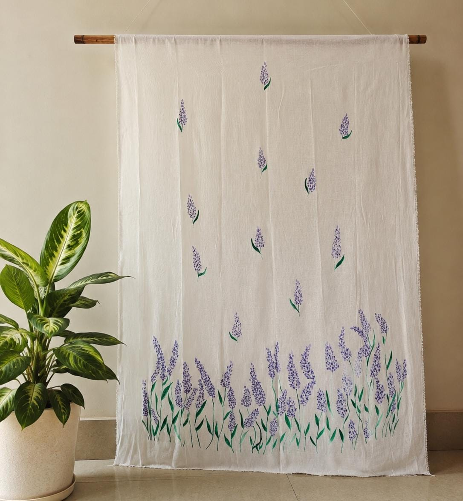
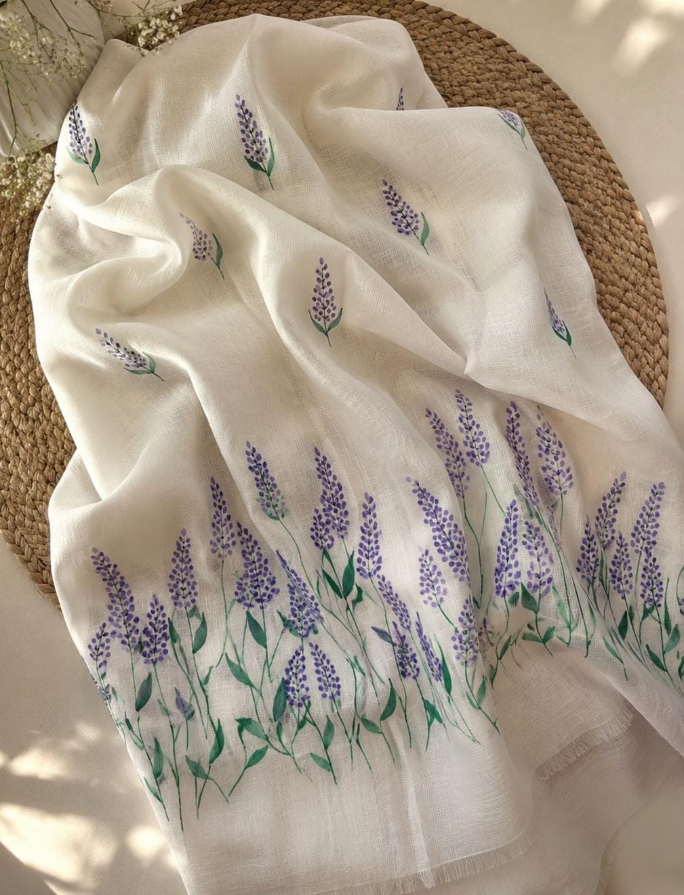
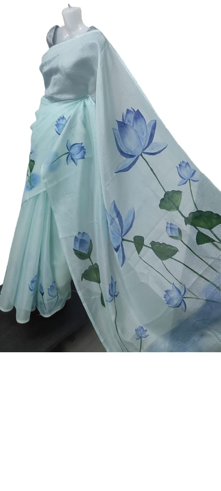

Lavender Churidar Top Material
Hand-painted · 2.5 m material · Lavender floral motif
Enquire about this piece ↗Nilouh collections / Kurta Tops
Everyday silhouettes, elevated through fabric, colour and hand-painted details.


Hand-painted · 2.5 m material · Lavender floral motif
Enquire about this piece ↗
Hand-painted cotton
Enquire about this piece ↗
Hand-painted linen
Enquire about this piece ↗
Hand-painted mul cotton
Enquire about this piece ↗